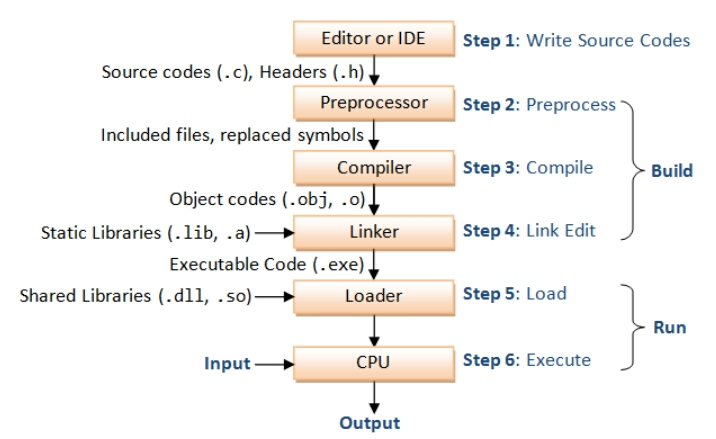

C Preprocessor Directives
The C preprocessor is a micro processor that is used by compiler to transform your code before compilation. It is called micro preprocessor because it allows us to add macros.
📝 Note: Preprocessor directives are executed before compilation.
Working of Preprocessor
All preprocessor commands begin with a hash symbol (#). It must be the first nonblank character, and for readability, a preprocessor directive should begin in the first column.
List of preprocessor directives and their descriptions
| No. | Directive & Description |
|---|---|
| 1. | #define
Substitutes a preprocessor macro. |
| 2. | #include
Inserts a particular header from another file. |
| 3. | #undef
Undefines a preprocessor macro. |
| 4. | #ifdef
Returns true if this macro is defined. |
| 5. | #ifndef
Returns true if this macro is not defined. |
| 6. | #if
Tests if a compile time condition is true. |
| 7. | #else
The alternative for #if. |
| 8. | #elif
#else and #if in one statement. |
| 9. | #endif
Ends preprocessor conditional. |
| 10. | #error
Prints error message on stderr. |
Preprocessors Examples
Analyze the following examples to understand various directives.
#define MAX_ARRAY_LENGTH 20
This directive tells the CPP to replace instances of MAX_ARRAY_LENGTH with 20. Use #define for constants to increase readability.
#include <stdio.h>
#include "myheader.h"
These directives tell the CPP to get stdio.h from System Libraries and add the text to the current source file. The next line tells CPP to get myheader.h from the local directory and add the content to the current source file.
#undef FILE_SIZE
#define FILE_SIZE 42
It tells the CPP to undefine existing FILE_SIZE and define it as 42.
#ifndef MESSAGE
#define MESSAGE "You wish!"
#endif
It tells the CPP to define MESSAGE only if MESSAGE isn't already defined.
#ifdef DEBUG
/* Your debugging statements here */
#endif It tells the CPP to process the statements enclosed if DEBUG is defined. This is useful if you pass the -DDEBUG flag to the gcc compiler at the time of compilation. This will define DEBUG, so you can turn debugging on and off on the fly during compilation.
C Macros
A macro is a segment of code which is replaced by the value of macro. Macro is defined by #define directive. There are two types of macros:
- Object-like Macros
- Function-like Macros
Object-like Macros
The object-like macro is an identifier that is replaced by value. It is widely used to represent numeric constants. For example:
#define PI 3.14
Here, PI is the macro name which will be replaced by the value 3.14.
Function-like Macros
The function-like macro looks like function call. For example:
#define MIN(a,b) ((a)<(b)?(a):(b))
Here, MIN is the macro name.
Predefined Macros
ANSI C defines a number of macros. Although each one is available for use in programming, the predefined macros should not be directly modified.
| No. | Macro & Description |
|---|---|
| 1. | __DATE__
The current date as a character literal in "MMM DD YYYY" format. |
| 2. | __TIME__
The current time as a character literal in "HH:MM:SS" format. |
| 3. | __FILE__
This contains the current filename as a string literal. |
| 4. | __LINE__
This contains the current line number as a decimal constant. |
| 5. | __STDC__
Defined as 1 when the compiler complies with the ANSI standard. |
C predefined macros example
File: simple.c
#include <stdio.h>
int main()
{
printf("File :%s\n", __FILE__ );
printf("Date :%s\n", __DATE__ );
printf("Time :%s\n", __TIME__ );
printf("Line :%d\n", __LINE__ );
printf("STDC :%d\n", __STDC__ );
return 0;
}
Output:
File :simple.c
Date :Dec 6 2015
Time :12:28:46
Line :6
STDC :1
Preprocessor Operators
The C preprocessor offers following operators to help you in creating macros:
Macro Continuation (\)
A macro usually must be contained on a single line. The macro continuation operator is used to continue a macro that is too long for a single line. For example:
#define message_for(a, b) \
printf(#a " and " #b ": We love you!\n")
Stringize (#)
The stringize or number-sign operator ('#'), when used within a macro definition, converts a macro parameter into a string constant. This operator may be used only in a macro that has a specified argument or parameter list. For example:
#include <stdio.h>
#define message_for(a, b) \
printf(#a " and " #b ": We love you!\n")
int main(void)
{
message_for(Carole, Debra);
return 0;
}
When the above code is compiled and executed, it produces the following result:
Carole and Debra: We love you!
Token Pasting (##)
The token-pasting operator (##) within a macro definition combines two arguments. It permits two separate tokens in the macro definition to be joined into a single token. For example:
#include <stdio.h>
#define tokenpaster(n) printf ("token" #n " = %d", token##n)
printf(#a " and " #b ": We love you!\n")
int main(void)
{
int token34 = 40;
tokenpaster(34);
return 0;
}
When the above code is compiled and executed, it produces the following result:
token34 = 40
How it happened, because this example results in the following actual output from the preprocessor:
printf ("token34 = %d", token34);
This example shows the concatenation of token##n into token34 and here we have used both stringize and token-pasting.
The defined() Operator
The preprocessor defined operator is used in constant expressions to determine if an identifier is defined using #define. If the specified identifier is defined, the value is true (non-zero). If the symbol is not defined, the value is false (zero). The defined operator is specified as follows:
#include <stdio.h>
#if !defined (MESSAGE)
#define MESSAGE "You wish!"
#endif
{
int main(void)
{
printf("Here is the message: %s\n", MESSAGE);
return 0;
}
When the above code is compiled and executed, it produces the following result:
Here is the message: You wish!
Parameterized Macros
One of the powerful functions of the CPP is the ability to simulate functions using parameterized macros. For example, we might have some code to square a number as follows:
int square(int x)
{
return x * x;
}
We can rewrite above code using a macro as follows:
#define square(x) ((x) * (x))
Macros with arguments must be defined using the #define directive before they can be used. The argument list is enclosed in parentheses and must immediately follow the macro name. Spaces are not allowed between and macro name and open parenthesis. For example:
#include <stdio.h>
#define MAX(x,y) ((x) > (y) ? (x) : (y))
int main(void)
{
printf("Max between 20 and 10 is %d\n", MAX(10, 20));
return 0;
}
When the above code is compiled and executed, it produces the following result:
Max between 20 and 10 is 20
Did you find this article helpful?